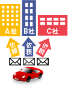
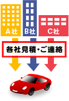

車検費用比較
「車検比較 | レスポンス」とは、カーセンサー.netの提携各社に車検費用の確認、見積依頼をすることができるサービスです。
ご希望の車検店舗にメールを使って直接問い合わせができるので、簡単に車検費用を比較検討することができます。
車検店舗へのお問い合わせは、無料でご利用いただくことができます。
車検費用一括査定
郵便番号を入力してください(必須入力)
車検費用比較の流れ
郵便番号を入力して、「車検比較一括見積へ！」をクリックしてください。

移動先のページで、車検費用を比較していただき、気に入った車検店舗にお問い合わせください。

カーセンサー.netから見積依頼の確認メールがご登録されたメールアドレスに届きます。24時間以内にメールが届かない場合は、再度見積依頼をお願いいたします。

車検店舗からお客様に、電話またはメールでご連絡いたします。
見積を依頼するにあたっての注意点
- 本サービスは株式会社リクルートにより運営されるサービスです。
- お客様が入力された個人情報を含む見積依頼データは、株式会社リクルートの責任のもと、厳重に管理されたうえで、株式会社リクルートの提携先車検店舗（法人）に開示されます。
- 本サービスの提供は日本国内（一部離島を除く）からのご依頼に限らせていただきます。
- お客様の車の状態、お住まいの地域によっては車検を受けられない場合もございます。あらかじめ、ご了承ください。
- 平成22年の郵便番号改定により、一部の郵便番号が変更となりましたが、本サイトでは、5月中旬頃に対応が完了する予定です。申し訳ございませんが、今しばらく旧郵便番号を入力していただくようお願い致します。